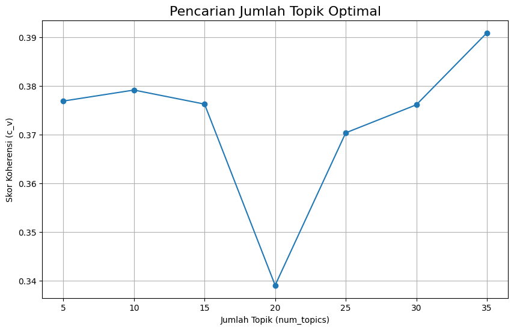
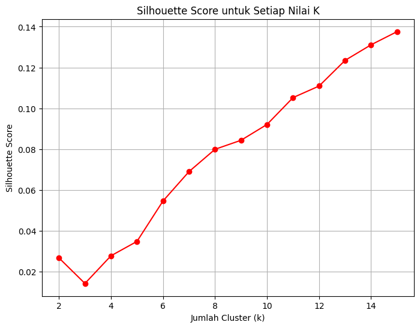

UTS#
1. Lakukan analisa klasifikasikan berita dengan extraksi fitur model topik modelling dengan classifier naïve bayes dan SVM#
!pip install plotly
Requirement already satisfied: plotly in /usr/local/lib/python3.12/dist-packages (5.24.1)
Requirement already satisfied: tenacity>=6.2.0 in /usr/local/lib/python3.12/dist-packages (from plotly) (8.5.0)
Requirement already satisfied: packaging in /usr/local/lib/python3.12/dist-packages (from plotly) (25.0)
!pip install -q nltk contractions emoji pyspellchecker Sastrawi
━━━━━━━━━━━━━━━━━━━━━━━━━━━━━━━━━━━━━━━━ 608.4/608.4 kB 8.3 MB/s eta 0:00:00
━━━━━━━━━━━━━━━━━━━━━━━━━━━━━━━━━━━━━━━━ 7.2/7.2 MB 56.1 MB/s eta 0:00:00
━━━━━━━━━━━━━━━━━━━━━━━━━━━━━━━━━━━━━━━━ 209.7/209.7 kB 7.7 MB/s eta 0:00:00
━━━━━━━━━━━━━━━━━━━━━━━━━━━━━━━━━━━━━━━━ 345.1/345.1 kB 8.5 MB/s eta 0:00:00
━━━━━━━━━━━━━━━━━━━━━━━━━━━━━━━━━━━━━━━━ 114.9/114.9 kB 5.1 MB/s eta 0:00:00
?25h
!pip install gensim
Collecting gensim
Downloading gensim-4.3.3-cp312-cp312-manylinux_2_17_x86_64.manylinux2014_x86_64.whl.metadata (8.1 kB)
Collecting numpy<2.0,>=1.18.5 (from gensim)
Downloading numpy-1.26.4-cp312-cp312-manylinux_2_17_x86_64.manylinux2014_x86_64.whl.metadata (61 kB)
━━━━━━━━━━━━━━━━━━━━━━━━━━━━━━━━━━━━━━━━ 61.0/61.0 kB 1.6 MB/s eta 0:00:00
?25hCollecting scipy<1.14.0,>=1.7.0 (from gensim)
Downloading scipy-1.13.1-cp312-cp312-manylinux_2_17_x86_64.manylinux2014_x86_64.whl.metadata (60 kB)
━━━━━━━━━━━━━━━━━━━━━━━━━━━━━━━━━━━━━━━━ 60.6/60.6 kB 1.9 MB/s eta 0:00:00
?25hRequirement already satisfied: smart-open>=1.8.1 in /usr/local/lib/python3.12/dist-packages (from gensim) (7.3.1)
Requirement already satisfied: wrapt in /usr/local/lib/python3.12/dist-packages (from smart-open>=1.8.1->gensim) (1.17.3)
Downloading gensim-4.3.3-cp312-cp312-manylinux_2_17_x86_64.manylinux2014_x86_64.whl (26.6 MB)
━━━━━━━━━━━━━━━━━━━━━━━━━━━━━━━━━━━━━━━━ 26.6/26.6 MB 41.5 MB/s eta 0:00:00
?25hDownloading numpy-1.26.4-cp312-cp312-manylinux_2_17_x86_64.manylinux2014_x86_64.whl (18.0 MB)
━━━━━━━━━━━━━━━━━━━━━━━━━━━━━━━━━━━━━━━━ 18.0/18.0 MB 43.2 MB/s eta 0:00:00
?25hDownloading scipy-1.13.1-cp312-cp312-manylinux_2_17_x86_64.manylinux2014_x86_64.whl (38.2 MB)
━━━━━━━━━━━━━━━━━━━━━━━━━━━━━━━━━━━━━━━━ 38.2/38.2 MB 10.0 MB/s eta 0:00:00
?25hInstalling collected packages: numpy, scipy, gensim
Attempting uninstall: numpy
Found existing installation: numpy 2.0.2
Uninstalling numpy-2.0.2:
Successfully uninstalled numpy-2.0.2
Attempting uninstall: scipy
Found existing installation: scipy 1.16.2
Uninstalling scipy-1.16.2:
Successfully uninstalled scipy-1.16.2
ERROR: pip's dependency resolver does not currently take into account all the packages that are installed. This behaviour is the source of the following dependency conflicts.
opencv-contrib-python 4.12.0.88 requires numpy<2.3.0,>=2; python_version >= "3.9", but you have numpy 1.26.4 which is incompatible.
thinc 8.3.6 requires numpy<3.0.0,>=2.0.0, but you have numpy 1.26.4 which is incompatible.
opencv-python 4.12.0.88 requires numpy<2.3.0,>=2; python_version >= "3.9", but you have numpy 1.26.4 which is incompatible.
opencv-python-headless 4.12.0.88 requires numpy<2.3.0,>=2; python_version >= "3.9", but you have numpy 1.26.4 which is incompatible.
tsfresh 0.21.1 requires scipy>=1.14.0; python_version >= "3.10", but you have scipy 1.13.1 which is incompatible.
Successfully installed gensim-4.3.3 numpy-1.26.4 scipy-1.13.1
import re
import sys
import time
import string
import warnings
from collections import Counter
import pandas as pd
import numpy as np
import nltk
from nltk.tokenize import word_tokenize
from nltk.corpus import stopwords
from nltk.stem import PorterStemmer, WordNetLemmatizer
from Sastrawi.Stemmer.StemmerFactory import StemmerFactory
from spellchecker import SpellChecker
import contractions
import emoji
from gensim.models import Word2Vec, FastText
from gensim import corpora, models
from gensim.models import LdaModel
from gensim.models.coherencemodel import CoherenceModel
from sklearn.decomposition import PCA
from sklearn.feature_extraction.text import TfidfVectorizer
import requests
from bs4 import BeautifulSoup
import matplotlib.pyplot as plt
import plotly.graph_objects as go
from tqdm import tqdm
warnings.filterwarnings('ignore')
nltk.download("punkt")
nltk.download("punkt_tab")
# Download stopwords
nltk.download('stopwords')
[nltk_data] Downloading package punkt to /root/nltk_data...
[nltk_data] Unzipping tokenizers/punkt.zip.
[nltk_data] Downloading package punkt_tab to /root/nltk_data...
[nltk_data] Unzipping tokenizers/punkt_tab.zip.
[nltk_data] Downloading package stopwords to /root/nltk_data...
[nltk_data] Unzipping corpora/stopwords.zip.
True
Load Data Berita#
berita = pd.read_csv("Berita.csv")
berita
| No | judul | berita | tanggal | kategori | link | |
|---|---|---|---|---|---|---|
| 0 | 1 | Airlangga Harap Kenaikan UMP Tingkatkan Daya B... | Menteri Koordinator (Menko) Bidang Perekonomia... | Minggu, 01 Des 2024 23:40 WIB | Ekonomi | https://www.cnnindonesia.com/ekonomi/202412012... |
| 1 | 2 | PT SIER Beri Penghargaan untuk 50 Tenant Terba... | Dalam rangka memeriahkan hari jadi ke-50, PT S... | Minggu, 01 Des 2024 20:45 WIB | Ekonomi | https://www.cnnindonesia.com/ekonomi/202412012... |
| 2 | 3 | Prabowo Bakal Bentuk Kementerian Penerimaan Ne... | Wacana Presiden Prabowo Subianto akan membentu... | Minggu, 01 Des 2024 19:40 WIB | Ekonomi | https://www.cnnindonesia.com/ekonomi/202412011... |
| 3 | 4 | Sinergi Kemenag & BPJS Ketenagakerjaan Lindung... | BPJS Ketenagakerjaan dan Kementerian Agama (Ke... | Minggu, 01 Des 2024 19:03 WIB | Ekonomi | https://www.cnnindonesia.com/ekonomi/202412011... |
| 4 | 5 | Pemerintah Segera Bentuk Satgas PHK Usai Tetap... | Pemerintah akan segera membentuk Satuan Tugas ... | Minggu, 01 Des 2024 19:00 WIB | Ekonomi | https://www.cnnindonesia.com/ekonomi/202412011... |
| ... | ... | ... | ... | ... | ... | ... |
| 1495 | 1496 | Laporan Sebab Tabrakan Pesawat-Black Hawk Dita... | Anggota Dewan Keselamatan Transportasi Nasiona... | Jumat, 31 Jan 2025 04:40 WIB | Internasional | https://www.cnnindonesia.com/internasional/202... |
| 1496 | 1497 | Israel Bebaskan 110 Sandera Palestina, Diantar... | Israel telah membebaskan 110 tahanan Palestina... | Jumat, 31 Jan 2025 03:01 WIB | Internasional | https://www.cnnindonesia.com/internasional/202... |
| 1497 | 1498 | Hamas Konfirmasi Kematian Komandan Al Qassam M... | Hamas mengonfirmasi kematian kepala militernya... | Jumat, 31 Jan 2025 02:30 WIB | Internasional | https://www.cnnindonesia.com/internasional/202... |
| 1498 | 1499 | Black Box American Airlines Ditemukan Usai Tab... | Tim penyelam diduga menemukan satu dari dua bl... | Jumat, 31 Jan 2025 01:00 WIB | Internasional | https://www.cnnindonesia.com/internasional/202... |
| 1499 | 1500 | Trump Salahkan Biden soal Penurunan Standar Ke... | Presiden AS Donald Trump menyalahkan pemerinta... | Jumat, 31 Jan 2025 00:40 WIB | Internasional | https://www.cnnindonesia.com/internasional/202... |
1500 rows × 6 columns
Preprocessing#
Text Cleaning#
def clean_text(text):
if not isinstance(text, str):
return ""
text = text.lower() # huruf kecil
text = emoji.demojize(text) # ubah emoji jadi teks, misal 😀 -> :grinning_face:
text = re.sub(r'\d+', '', text) # hapus angka
text = text.translate(str.maketrans('', '', string.punctuation)) # hapus tanda baca
text = re.sub(r'\W', ' ', text) # hapus karakter non-kata
text = BeautifulSoup(text, "html.parser").get_text() # hapus tag HTML
text = re.sub(r'\s+', ' ', text).strip() # normalisasi spasi
return text
# Baca CSV
berita_df = pd.read_csv("Berita.csv", dtype=str).fillna("")
# Terapkan langsung ke kolom target
berita_df["berita_clean"] = berita_df["berita"].apply(clean_text)
# Cleaning kolom target
berita_df["berita_clean"] = berita_df["berita"].apply(clean_text)
print("\nBerita")
berita_df[["berita", "berita_clean"]].head(10)
Berita
| berita | berita_clean | |
|---|---|---|
| 0 | Menteri Koordinator (Menko) Bidang Perekonomia... | menteri koordinator menko bidang perekonomian ... |
| 1 | Dalam rangka memeriahkan hari jadi ke-50, PT S... | dalam rangka memeriahkan hari jadi ke pt surab... |
| 2 | Wacana Presiden Prabowo Subianto akan membentu... | wacana presiden prabowo subianto akan membentu... |
| 3 | BPJS Ketenagakerjaan dan Kementerian Agama (Ke... | bpjs ketenagakerjaan dan kementerian agama kem... |
| 4 | Pemerintah akan segera membentuk Satuan Tugas ... | pemerintah akan segera membentuk satuan tugas ... |
| 5 | Menko Bidang Infrastruktur dan Pembangunan Kew... | menko bidang infrastruktur dan pembangunan kew... |
| 6 | Kepala Badan Gizi Nasional Dadan Hindayana men... | kepala badan gizi nasional dadan hindayana men... |
| 7 | Menteri Koordinator Bidang Pangan Zulkifli Has... | menteri koordinator bidang pangan zulkifli has... |
| 8 | Uji coba alias commissioning pembangkit listri... | uji coba alias commissioning pembangkit listri... |
| 9 | Anak crazy rich pengusaha sawit Kalimantan Sam... | anak crazy rich pengusaha sawit kalimantan sam... |
Tokenisasi#
# Tokenisasi untuk PTA
berita_df["berita_tokens"] = berita_df["berita_clean"].apply(word_tokenize)
print("\nBerita (berita_tokens):")
berita_df[["berita_clean", "berita_tokens"]].head(10)
Berita (berita_tokens):
| berita_clean | berita_tokens | |
|---|---|---|
| 0 | menteri koordinator menko bidang perekonomian ... | [menteri, koordinator, menko, bidang, perekono... |
| 1 | dalam rangka memeriahkan hari jadi ke pt surab... | [dalam, rangka, memeriahkan, hari, jadi, ke, p... |
| 2 | wacana presiden prabowo subianto akan membentu... | [wacana, presiden, prabowo, subianto, akan, me... |
| 3 | bpjs ketenagakerjaan dan kementerian agama kem... | [bpjs, ketenagakerjaan, dan, kementerian, agam... |
| 4 | pemerintah akan segera membentuk satuan tugas ... | [pemerintah, akan, segera, membentuk, satuan, ... |
| 5 | menko bidang infrastruktur dan pembangunan kew... | [menko, bidang, infrastruktur, dan, pembanguna... |
| 6 | kepala badan gizi nasional dadan hindayana men... | [kepala, badan, gizi, nasional, dadan, hindaya... |
| 7 | menteri koordinator bidang pangan zulkifli has... | [menteri, koordinator, bidang, pangan, zulkifl... |
| 8 | uji coba alias commissioning pembangkit listri... | [uji, coba, alias, commissioning, pembangkit, ... |
| 9 | anak crazy rich pengusaha sawit kalimantan sam... | [anak, crazy, rich, pengusaha, sawit, kalimant... |
Stopword Removal#
# Stopwords untuk bahasa Indonesia
stop_words_id = set(stopwords.words('indonesian'))
# Filter stopwords di PTA
berita_df["berita_filtered"] = berita_df["berita_tokens"].apply(
lambda tokens: [word for word in tokens if word not in stop_words_id]
)
print("\nBerita (berita_filtered):")
berita_df[["berita_tokens", "berita_filtered"]].head(10)
Berita (berita_filtered):
| berita_tokens | berita_filtered | |
|---|---|---|
| 0 | [menteri, koordinator, menko, bidang, perekono... | [menteri, koordinator, menko, bidang, perekono... |
| 1 | [dalam, rangka, memeriahkan, hari, jadi, ke, p... | [rangka, memeriahkan, pt, surabaya, industrial... |
| 2 | [wacana, presiden, prabowo, subianto, akan, me... | [wacana, presiden, prabowo, subianto, membentu... |
| 3 | [bpjs, ketenagakerjaan, dan, kementerian, agam... | [bpjs, ketenagakerjaan, kementerian, agama, ke... |
| 4 | [pemerintah, akan, segera, membentuk, satuan, ... | [pemerintah, membentuk, satuan, tugas, pemutus... |
| 5 | [menko, bidang, infrastruktur, dan, pembanguna... | [menko, bidang, infrastruktur, pembangunan, ke... |
| 6 | [kepala, badan, gizi, nasional, dadan, hindaya... | [kepala, badan, gizi, nasional, dadan, hindaya... |
| 7 | [menteri, koordinator, bidang, pangan, zulkifl... | [menteri, koordinator, bidang, pangan, zulkifl... |
| 8 | [uji, coba, alias, commissioning, pembangkit, ... | [uji, coba, alias, commissioning, pembangkit, ... |
| 9 | [anak, crazy, rich, pengusaha, sawit, kalimant... | [anak, crazy, rich, pengusaha, sawit, kalimant... |
print(berita_df.columns)
Index(['No', 'judul', 'berita', 'tanggal', 'kategori', 'link', 'berita_clean',
'berita_tokens', 'berita_filtered'],
dtype='object')
cols_to_save = [
"No",
"judul",
"berita",
"tanggal",
"kategori",
"link",
"berita_clean",
"berita_tokens",
"berita_filtered"
]
# Simpan ke CSV
berita_df[cols_to_save].to_csv("berita_processed.csv", index=False, encoding="utf-8-sig")
print("File berhasil disimpan sebagai berita_processed.csv")
File berhasil disimpan sebagai berita_processed.csv
Analisa klasifikasikan berita dengan extraksi fitur model topik modelling dengan classifier naïve bayes dan SVM#
berita_df['tokens_list'] = berita_df['berita_filtered']
berita_df['tokens_str'] = berita_df['tokens_list'].apply(lambda x: " ".join(x))
from sklearn.feature_extraction.text import CountVectorizer
vectorizer = CountVectorizer()
X_bow = vectorizer.fit_transform(berita_df['tokens_str'])
from sklearn.decomposition import LatentDirichletAllocation
lda_model = LatentDirichletAllocation(n_components=15, random_state=42)
X_topics = lda_model.fit_transform(X_bow)
terms = vectorizer.get_feature_names_out()
num_top_words = 15
for idx, topic in enumerate(lda_model.components_):
print(f"\nTopik {idx+1}:")
print(", ".join([terms[i] for i in topic.argsort()[:-num_top_words - 1:-1]]))
Topik 1:
indonesia, ahsanhendra, pelatih, juara, pensiun, masters, putra, dunia, cnn, ahsan, ganda, wakil, hendra, malaysia, persen
Topik 2:
israel, gencatan, senjata, gaza, trump, hamas, palestina, as, sandera, kesepakatan, presiden, warga, menteri, amerika, fase
Topik 3:
persen, minyak, pajak, presiden, ppn, pemerintah, kenaikan, rp, harga, putusan, partai, prabowo, uu, mentah, as
Topik 4:
program, makan, bergizi, gratis, mbg, rp, juta, persen, prabowo, indonesia, gizi, nasional, pemerintah, cnn, presiden
Topik 5:
indonesia, menteri, pertamina, energi, prabowo, presiden, bbm, sistem, bahlil, pemerintah, filipina, stasiun, cnn, miftah, pajak
Topik 6:
laut, pagar, tangerang, pt, nelayan, kpk, kkp, misterius, perikanan, kelautan, kementerian, hgb, proyek, sertifikat, terkait
Topik 7:
indonesia, timnas, piala, pelatih, pemain, kluivert, hasto, pssi, shin, pdip, dunia, tae, tim, yong, sty
Topik 8:
kebakaran, orang, israel, los, suriah, angeles, pesawat, wilayah, warga, serangan, militer, presiden, negara, selatan, api
Topik 9:
ppn, harga, persen, rp, barang, jasa, pangan, pemerintah, prabowo, beras, mewah, tarif, minyakita, kenaikan, pajak
Topik 10:
indonesia, brics, negara, anggota, negeri, ri, kerja, resmi, presiden, ekonomi, dunia, global, negaranegara, china, memiliki
Topik 11:
suara, kpu, korban, gubernur, nomor, hasil, bupati, meraih, provinsi, ump, pelaku, orang, pilgub, urut, rekapitulasi
Topik 12:
rp, korban, pelaku, polda, metro, polisi, uang, juta, triliun, malaysia, polres, cnn, mobil, diduga, tersangka
Topik 13:
gol, menit, pemain, liga, poin, laga, red, sparks, vietnam, piala, pertandingan, aff, gawang, babak, kemenangan
Topik 14:
banjir, jakarta, kota, warga, kecamatan, air, jalan, prabowo, pemerintah, daerah, desa, rumah, masyarakat, kabupaten, lampung
Topik 15:
yoon, presiden, hukum, darso, negara, darurat, surat, dpr, menteri, korupsi, militer, polisi, komisi, keluarga, terkait
df_topics = pd.DataFrame(X_topics, columns=[f"topik_{i+1}" for i in range(lda_model.n_components)])
df_final = pd.concat([berita_df, df_topics], axis=1)
df_final["topik_dominan"] = df_topics.idxmax(axis=1).apply(lambda x: int(x.split("_")[1]))
print("\n=== Contoh 10 Data dengan Topik Dominan ===")
print(df_final[["judul", "kategori", "topik_dominan"]].head(10))
print("\n=== Distribusi Dokumen per Topik ===")
print(df_final["topik_dominan"].value_counts())
=== Contoh 10 Data dengan Topik Dominan ===
judul kategori topik_dominan
0 Airlangga Harap Kenaikan UMP Tingkatkan Daya B... Ekonomi 4
1 PT SIER Beri Penghargaan untuk 50 Tenant Terba... Ekonomi 3
2 Prabowo Bakal Bentuk Kementerian Penerimaan Ne... Ekonomi 10
3 Sinergi Kemenag & BPJS Ketenagakerjaan Lindung... Ekonomi 4
4 Pemerintah Segera Bentuk Satgas PHK Usai Tetap... Ekonomi 14
5 AHY Buka-bukaan Nasib Kelanjutan Pembangunan I... Ekonomi 14
6 Badan Gizi Soal Biaya Makan Gratis Rp10 Ribu: ... Ekonomi 4
7 Zulhas Minta Tambahan Anggaran Rp510 M Demi Ca... Ekonomi 9
8 PLN Akan Uji Coba PLTS IKN 22 Desember Ekonomi 5
9 Profil Jhony Saputra, Anak Haji Isam yang Jadi... Ekonomi 12
=== Distribusi Dokumen per Topik ===
topik_dominan
13 194
8 190
6 146
7 142
4 123
14 117
2 113
12 94
5 67
10 62
3 59
1 58
15 53
9 46
11 36
Name: count, dtype: int64
SVM#
from sklearn.model_selection import train_test_split
from sklearn.naive_bayes import MultinomialNB
from sklearn.metrics import classification_report
X = X_topics
y = berita_df["kategori"]
X_train, X_test, y_train, y_test = train_test_split(
X, y, test_size=0.2, random_state=42
)
nb = MultinomialNB()
nb.fit(X_train, y_train)
y_pred_nb = nb.predict(X_test)
print("=== Hasil Naive Bayes ===")
print(classification_report(y_test, y_pred_nb))
=== Hasil Naive Bayes ===
precision recall f1-score support
Ekonomi 0.75 0.64 0.69 73
Internasional 0.88 0.88 0.88 84
Nasional 0.60 0.67 0.64 70
Olahraga 0.92 0.95 0.93 73
accuracy 0.79 300
macro avg 0.79 0.79 0.78 300
weighted avg 0.79 0.79 0.79 300
Naive Bayes#
from sklearn import svm
from sklearn.metrics import classification_report
clf = svm.SVC(kernel="linear", random_state=42)
clf.fit(X_train, y_train)
y_pred_svm = clf.predict(X_test)
print("=== Hasil SVM ===")
print(classification_report(y_test, y_pred_svm))
=== Hasil SVM ===
precision recall f1-score support
Ekonomi 0.70 0.74 0.72 73
Internasional 0.84 0.85 0.84 84
Nasional 0.62 0.57 0.59 70
Olahraga 0.92 0.92 0.92 73
accuracy 0.77 300
macro avg 0.77 0.77 0.77 300
weighted avg 0.77 0.77 0.77 300
from sklearn.model_selection import train_test_split
# Gunakan dataframe yang benar
X = X_topics
y = berita_df["kategori"]
# Split data menjadi data latih dan data uji
X_train, X_test, y_train, y_test = train_test_split(
X, y, test_size=0.2, random_state=42
)
from sklearn.linear_model import LogisticRegression
from sklearn.metrics import classification_report
clf = LogisticRegression(max_iter=1000)
clf.fit(X_train, y_train)
y_pred = clf.predict(X_test)
print(classification_report(y_test, y_pred))
precision recall f1-score support
Ekonomi 0.71 0.75 0.73 73
Internasional 0.87 0.87 0.87 84
Nasional 0.65 0.60 0.62 70
Olahraga 0.92 0.93 0.93 73
accuracy 0.79 300
macro avg 0.79 0.79 0.79 300
weighted avg 0.79 0.79 0.79 300
dominant_topics = []
for doc_topics in X_topics:
# Get the index of the dominant topic for the current document
dominant_topic_index = doc_topics.argmax()
# Get the probability of the dominant topic
dominant_topic_probability = doc_topics[dominant_topic_index]
dominant_topics.append((dominant_topic_index + 1, round(dominant_topic_probability, 3)))
df_dominant = pd.DataFrame(dominant_topics, columns=["Topik Dominan", "Proporsi"])
# Concatenate with the original dataframe and the topic distribution dataframe
df_result = pd.concat([berita_df.reset_index(drop=True), df_dominant.reset_index(drop=True), df_topics.reset_index(drop=True)], axis=1)
display(df_result[["judul", "kategori", "Topik Dominan", "Proporsi", "berita_clean"]])
| judul | kategori | Topik Dominan | Proporsi | berita_clean | |
|---|---|---|---|---|---|
| 0 | Airlangga Harap Kenaikan UMP Tingkatkan Daya B... | Ekonomi | 4 | 0.870 | menteri koordinator menko bidang perekonomian ... |
| 1 | PT SIER Beri Penghargaan untuk 50 Tenant Terba... | Ekonomi | 3 | 0.801 | dalam rangka memeriahkan hari jadi ke pt surab... |
| 2 | Prabowo Bakal Bentuk Kementerian Penerimaan Ne... | Ekonomi | 10 | 0.466 | wacana presiden prabowo subianto akan membentu... |
| 3 | Sinergi Kemenag & BPJS Ketenagakerjaan Lindung... | Ekonomi | 4 | 0.444 | bpjs ketenagakerjaan dan kementerian agama kem... |
| 4 | Pemerintah Segera Bentuk Satgas PHK Usai Tetap... | Ekonomi | 14 | 0.808 | pemerintah akan segera membentuk satuan tugas ... |
| ... | ... | ... | ... | ... | ... |
| 1495 | Laporan Sebab Tabrakan Pesawat-Black Hawk Dita... | Internasional | 2 | 0.644 | anggota dewan keselamatan transportasi nasiona... |
| 1496 | Israel Bebaskan 110 Sandera Palestina, Diantar... | Internasional | 2 | 0.547 | israel telah membebaskan tahanan palestina pad... |
| 1497 | Hamas Konfirmasi Kematian Komandan Al Qassam M... | Internasional | 8 | 0.587 | hamas mengonfirmasi kematian kepala militernya... |
| 1498 | Black Box American Airlines Ditemukan Usai Tab... | Internasional | 2 | 0.592 | tim penyelam diduga menemukan satu dari dua bl... |
| 1499 | Trump Salahkan Biden soal Penurunan Standar Ke... | Internasional | 2 | 0.860 | presiden as donald trump menyalahkan pemerinta... |
1500 rows × 5 columns
2. Lakukan analisa clutering dokumen pada data email#
df = pd.read_csv('spam.csv', encoding='latin1')
print("Dataset shape:", df.shape)
df
Dataset shape: (5572, 5)
| id | Text | Unnamed: 2 | Unnamed: 3 | Unnamed: 4 | |
|---|---|---|---|---|---|
| 0 | 1 | Go until jurong point, crazy.. Available only ... | NaN | NaN | NaN |
| 1 | 2 | Ok lar... Joking wif u oni... | NaN | NaN | NaN |
| 2 | 3 | Free entry in 2 a wkly comp to win FA Cup fina... | NaN | NaN | NaN |
| 3 | 4 | U dun say so early hor... U c already then say... | NaN | NaN | NaN |
| 4 | 5 | Nah I don't think he goes to usf, he lives aro... | NaN | NaN | NaN |
| ... | ... | ... | ... | ... | ... |
| 5567 | 5568 | This is the 2nd time we have tried 2 contact u... | NaN | NaN | NaN |
| 5568 | 5569 | Will Ì_ b going to esplanade fr home? | NaN | NaN | NaN |
| 5569 | 5570 | Pity, * was in mood for that. So...any other s... | NaN | NaN | NaN |
| 5570 | 5571 | The guy did some bitching but I acted like i'd... | NaN | NaN | NaN |
| 5571 | 5572 | Rofl. Its true to its name | NaN | NaN | NaN |
5572 rows × 5 columns
print("\nDataset info:")
df.info()
Dataset info:
<class 'pandas.core.frame.DataFrame'>
RangeIndex: 5572 entries, 0 to 5571
Data columns (total 5 columns):
# Column Non-Null Count Dtype
--- ------ -------------- -----
0 id 5572 non-null int64
1 Text 5572 non-null object
2 Unnamed: 2 50 non-null object
3 Unnamed: 3 12 non-null object
4 Unnamed: 4 6 non-null object
dtypes: int64(1), object(4)
memory usage: 217.8+ KB
Preprocessing#
df['Text']
| Text | |
|---|---|
| 0 | Go until jurong point, crazy.. Available only ... |
| 1 | Ok lar... Joking wif u oni... |
| 2 | Free entry in 2 a wkly comp to win FA Cup fina... |
| 3 | U dun say so early hor... U c already then say... |
| 4 | Nah I don't think he goes to usf, he lives aro... |
| ... | ... |
| 5567 | This is the 2nd time we have tried 2 contact u... |
| 5568 | Will Ì_ b going to esplanade fr home? |
| 5569 | Pity, * was in mood for that. So...any other s... |
| 5570 | The guy did some bitching but I acted like i'd... |
| 5571 | Rofl. Its true to its name |
5572 rows × 1 columns
Menghapus Mising Value#
df.dropna(subset=['Text'], inplace=True)
# Hapus data duplikat
df.drop_duplicates(inplace=True)
Fungsi untuk membersihkan teks#
def clean_text(text):
# Pastikan input adalah string
if not isinstance(text, str):
return ""
text = text.lower() # 1. Ubah ke huruf kecil
# Ganti karakter non-breaking space (U+00A0) dengan spasi biasa
text = text.replace(u'\xa0', u' ')
# Hapus semua karakter yang BUKAN huruf, angka, atau spasi
text = re.sub(r'[^\w\s]', '', text)
# Hapus semua angka
text = re.sub(r'\d+', '', text)
# Ganti spasi ganda/lebih menjadi satu spasi & hapus spasi di awal/akhir
text = re.sub(r'\s+', ' ', text).strip()
return text
# Terapkan pembersihan ke kolom 'isi'
df['cleaned_isi'] = df['Text'].apply(clean_text)
# Tampilkan DataFrame
display(df[['Text', 'cleaned_isi']].head())
| Text | cleaned_isi | |
|---|---|---|
| 0 | Go until jurong point, crazy.. Available only ... | go until jurong point crazy available only in ... |
| 1 | Ok lar... Joking wif u oni... | ok lar joking wif u oni |
| 2 | Free entry in 2 a wkly comp to win FA Cup fina... | free entry in a wkly comp to win fa cup final ... |
| 3 | U dun say so early hor... U c already then say... | u dun say so early hor u c already then say |
| 4 | Nah I don't think he goes to usf, he lives aro... | nah i dont think he goes to usf he lives aroun... |
Tokenisasi#
!{sys.executable} -m pip install nltk
Requirement already satisfied: nltk in /usr/local/lib/python3.12/dist-packages (3.9.1)
Requirement already satisfied: click in /usr/local/lib/python3.12/dist-packages (from nltk) (8.3.0)
Requirement already satisfied: joblib in /usr/local/lib/python3.12/dist-packages (from nltk) (1.5.2)
Requirement already satisfied: regex>=2021.8.3 in /usr/local/lib/python3.12/dist-packages (from nltk) (2024.11.6)
Requirement already satisfied: tqdm in /usr/local/lib/python3.12/dist-packages (from nltk) (4.67.1)
nltk.download('punkt')
nltk.download('punkt_tab')
# Fungsi untuk melakukan tokenisasi
def tokenize_text(text):
return word_tokenize(text)
# Terapkan tokenisasi ke kolom 'cleaned_isi'
df['tokenized_isi'] = df['cleaned_isi'].apply(tokenize_text)
# Tampilkan DataFrame dengan kolom hasil tokenisasi
display(df[['cleaned_isi', 'tokenized_isi']].head())
[nltk_data] Downloading package punkt to /root/nltk_data...
[nltk_data] Package punkt is already up-to-date!
[nltk_data] Downloading package punkt_tab to /root/nltk_data...
[nltk_data] Package punkt_tab is already up-to-date!
| cleaned_isi | tokenized_isi | |
|---|---|---|
| 0 | go until jurong point crazy available only in ... | [go, until, jurong, point, crazy, available, o... |
| 1 | ok lar joking wif u oni | [ok, lar, joking, wif, u, oni] |
| 2 | free entry in a wkly comp to win fa cup final ... | [free, entry, in, a, wkly, comp, to, win, fa, ... |
| 3 | u dun say so early hor u c already then say | [u, dun, say, so, early, hor, u, c, already, t... |
| 4 | nah i dont think he goes to usf he lives aroun... | [nah, i, dont, think, he, goes, to, usf, he, l... |
Stopword Removal#
nltk.download('stopwords')
# Dapatkan Stop Word bahasa Indonesia
list_stopwords = set(stopwords.words('english'))
# Fungsi untuk menghapus stop words
def remove_stopwords(tokens):
return [word for word in tokens if word not in list_stopwords]
# Terapkan penghapusan Stop Word ke kolom 'tokenized_isi'
df['stopwords_removed_isi'] = df['tokenized_isi'].apply(remove_stopwords)
# Tampilkan DataFrame
display(df[['tokenized_isi', 'stopwords_removed_isi']].head())
[nltk_data] Downloading package stopwords to /root/nltk_data...
[nltk_data] Package stopwords is already up-to-date!
| tokenized_isi | stopwords_removed_isi | |
|---|---|---|
| 0 | [go, until, jurong, point, crazy, available, o... | [go, jurong, point, crazy, available, bugis, n... |
| 1 | [ok, lar, joking, wif, u, oni] | [ok, lar, joking, wif, u, oni] |
| 2 | [free, entry, in, a, wkly, comp, to, win, fa, ... | [free, entry, wkly, comp, win, fa, cup, final,... |
| 3 | [u, dun, say, so, early, hor, u, c, already, t... | [u, dun, say, early, hor, u, c, already, say] |
| 4 | [nah, i, dont, think, he, goes, to, usf, he, l... | [nah, dont, think, goes, usf, lives, around, t... |
# Gabungkan semua token setelah stopword removal menjadi satu daftar
all_words_after_stopwords = [word for tokens in df['stopwords_removed_isi'] for word in tokens]
# Hitung frekuensi setiap kata
word_frequencies = Counter(all_words_after_stopwords)
# Menampilkan kata-kata yang paling umum dan frekuensinya
print("Top Most Frequent Words (Without Stemming):")
for word, frequency in word_frequencies.most_common(20): # Menampilkan 20 kata teratas
print(f"{word}: {frequency}")
Top Most Frequent Words (Without Stemming):
u: 1143
call: 578
im: 464
get: 390
ur: 384
go: 282
dont: 279
free: 278
ok: 277
ltgt: 276
å: 274
know: 257
got: 251
like: 242
ill: 237
good: 234
come: 226
day: 211
time: 208
love: 195
# Buat DataFrame baru dengan isi berita asli, hasil preprocessing, dan kategori
processed_df = df[['Text', 'stopwords_removed_isi']].copy()
# Ganti nama kolom 'stopwords_removed_isi' menjadi 'hasil_preprocessing'
processed_df.rename(columns={'stopwords_removed_isi': 'hasil_preprocessing'}, inplace=True)
# Konversi frekuensi kata ke DataFrame
frequency_df = pd.DataFrame.from_dict(word_frequencies, orient='index', columns=['frequency'])
frequency_df.index.name = 'word'
frequency_df.sort_values(by='frequency', ascending=False, inplace=True)
# Simpan ke dua file CSV terpisah
processed_df.to_csv('hasil_preprocessing_emailUTS.csv', index=False, encoding='utf-8')
frequency_df.to_csv('frekuensi_kata_emailUTS.csv', encoding='utf-8')
print("Hasil preprocessing disimpan di 'hasil_preprocessing_emailUTS.csv'")
print("Frekuensi kata disimpan di 'frekuensi_kata_emailUTS.csv'")
Hasil preprocessing disimpan di 'hasil_preprocessing_emailUTS.csv'
Frekuensi kata disimpan di 'frekuensi_kata_emailUTS.csv'
hasil_preprocessing = "hasil_preprocessing_emailUTS.csv"
df = pd.read_csv(hasil_preprocessing)
# Tampilkan data
df
| Text | hasil_preprocessing | |
|---|---|---|
| 0 | Go until jurong point, crazy.. Available only ... | ['go', 'jurong', 'point', 'crazy', 'available'... |
| 1 | Ok lar... Joking wif u oni... | ['ok', 'lar', 'joking', 'wif', 'u', 'oni'] |
| 2 | Free entry in 2 a wkly comp to win FA Cup fina... | ['free', 'entry', 'wkly', 'comp', 'win', 'fa',... |
| 3 | U dun say so early hor... U c already then say... | ['u', 'dun', 'say', 'early', 'hor', 'u', 'c', ... |
| 4 | Nah I don't think he goes to usf, he lives aro... | ['nah', 'dont', 'think', 'goes', 'usf', 'lives... |
| ... | ... | ... |
| 5567 | This is the 2nd time we have tried 2 contact u... | ['nd', 'time', 'tried', 'contact', 'u', 'u', '... |
| 5568 | Will Ì_ b going to esplanade fr home? | ['ì_', 'b', 'going', 'esplanade', 'fr', 'home'] |
| 5569 | Pity, * was in mood for that. So...any other s... | ['pity', 'mood', 'soany', 'suggestions'] |
| 5570 | The guy did some bitching but I acted like i'd... | ['guy', 'bitching', 'acted', 'like', 'id', 'in... |
| 5571 | Rofl. Its true to its name | ['rofl', 'true', 'name'] |
5572 rows × 2 columns
frekuensi_kata = "frekuensi_kata_emailUTS.csv"
df = pd.read_csv(frekuensi_kata)
# Tampilkan data
df
| word | frequency | |
|---|---|---|
| 0 | u | 1143 |
| 1 | call | 578 |
| 2 | im | 464 |
| 3 | get | 390 |
| 4 | ur | 384 |
| ... | ... | ... |
| 8479 | practising | 1 |
| 8480 | rupaul | 1 |
| 8481 | baskets | 1 |
| 8482 | dane | 1 |
| 8483 | bitching | 1 |
8484 rows × 2 columns
Analisa clutering dokumen pada data email#
# Memuat Dataset
try:
df = pd.read_csv('hasil_preprocessing_emailUTS.csv')
print(f"\nDataset berhasil dimuat. Jumlah data: {len(df)} baris.")
print("Contoh data awal:")
print(df.head())
except FileNotFoundError:
print("\nError: File tidak ditemukan. Pastikan nama file CSV sudah benar.")
# Jika file tidak ditemukan, hentikan proses.
# df = pd.DataFrame()
Dataset berhasil dimuat. Jumlah data: 5572 baris.
Contoh data awal:
Text \
0 Go until jurong point, crazy.. Available only ...
1 Ok lar... Joking wif u oni...
2 Free entry in 2 a wkly comp to win FA Cup fina...
3 U dun say so early hor... U c already then say...
4 Nah I don't think he goes to usf, he lives aro...
hasil_preprocessing
0 ['go', 'jurong', 'point', 'crazy', 'available'...
1 ['ok', 'lar', 'joking', 'wif', 'u', 'oni']
2 ['free', 'entry', 'wkly', 'comp', 'win', 'fa',...
3 ['u', 'dun', 'say', 'early', 'hor', 'u', 'c', ...
4 ['nah', 'dont', 'think', 'goes', 'usf', 'lives...
from ast import literal_eval
df['tokens'] = df['hasil_preprocessing'].apply(literal_eval)
print(f"Data bersih dimuat. Jumlah data: {len(df)} baris.")
Data bersih dimuat. Jumlah data: 5572 baris.
from gensim.corpora import Dictionary
from gensim.models import HdpModel, LdaMulticore
import time
import matplotlib.pyplot as plt
import numpy as np
from gensim.models.coherencemodel import CoherenceModel
# Siapkan data untuk Gensim
documents = df['tokens'].tolist()
dictionary = Dictionary(documents)
dictionary.filter_extremes(no_below=15, no_above=0.5)
corpus = [dictionary.doc2bow(doc) for doc in documents]
print(f"\nKamus dibuat dan difilter. Jumlah kata unik: {len(dictionary)}")
# Estimasi Jumlah Topik dengan HDP
print("\n--- Menjalankan HDP untuk estimasi jumlah topik... ---")
hdp_model = HdpModel(corpus=corpus, id2word=dictionary)
estimated_num_topics = len(hdp_model.print_topics())
print(f"✅ HDP mengestimasi ada sekitar: {estimated_num_topics} topik.")
# Mencari Jumlah Topik Terbaik dengan Plot Koherensi
def compute_coherence_values_multicore(dictionary, corpus, texts, limit, start=2, step=3):
coherence_values = []
start_time = time.time()
for num_topics in range(start, limit, step):
model = LdaMulticore(corpus=corpus, id2word=dictionary, num_topics=num_topics,
random_state=42, passes=10, workers=3)
coherencemodel = CoherenceModel(model=model, texts=texts, dictionary=dictionary, coherence='c_v')
current_coherence = coherencemodel.get_coherence()
coherence_values.append(current_coherence)
print(f"Selesai menghitung untuk {num_topics} topik. Skor Koherensi: {current_coherence:.4f}")
total_time = time.time() - start_time
print(f"\nTotal waktu pencarian koherensi: {total_time/60:.2f} menit")
return coherence_values
# Atur rentang pencarian di sekitar hasil HDP
search_start = max(2, estimated_num_topics - 15)
search_limit = estimated_num_topics + 20
search_step = 5
print(f"\n--- Menjalankan pencarian koherensi dari {search_start} hingga {search_limit} topik... ---")
coherence_values = compute_coherence_values_multicore(dictionary=dictionary, corpus=corpus, texts=documents,
start=search_start, limit=search_limit, step=search_step)
# Tampilkan grafik
x = range(search_start, search_limit, search_step)
plt.figure(figsize=(10, 6))
plt.plot(x, coherence_values, marker='o')
plt.title("Pencarian Jumlah Topik Optimal", fontsize=16)
plt.xlabel("Jumlah Topik (num_topics)")
plt.ylabel("Skor Koherensi (c_v)")
plt.xticks(x)
plt.grid(True)
plt.show()
# Pilih jumlah topik terbaik (yang memiliki skor koherensi tertinggi)
optimal_num_topics = x[np.argmax(coherence_values)]
print(f"\n✅ Jumlah topik optimal yang ditemukan: {optimal_num_topics}")
# Latih Model LDA Final & Ekstrak Fitur ---
print("\n--- Melatih model LDA final dengan topik optimal... ---")
lda_model = LdaMulticore(corpus=corpus, id2word=dictionary, num_topics=optimal_num_topics,
random_state=42, passes=15)
print("\n--- Topik-topik yang Ditemukan oleh Model LDA ---")
# Tampilkan 15 kata teratas untuk setiap topik
for idx, topic in lda_model.print_topics(num_words=15):
print(f"Topik: {idx}")
print(f"Kata-kata: {topic}\n")
# Ekstrak fitur (distribusi topik) untuk setiap dokumen
def get_lda_features(lda_model, bow_corpus):
features = []
for doc_bow in bow_corpus:
topic_distribution = lda_model.get_document_topics(doc_bow, minimum_probability=0)
doc_features = [0.0] * optimal_num_topics
for topic_id, prob in topic_distribution:
doc_features[topic_id] = prob
features.append(doc_features)
return np.array(features)
X = get_lda_features(lda_model, corpus)
print("Ekstraksi fitur LDA selesai.")
print(f"Bentuk matriks fitur (X): {X.shape}")
Kamus dibuat dan difilter. Jumlah kata unik: 602
--- Menjalankan HDP untuk estimasi jumlah topik... ---
WARNING:gensim.models.hdpmodel:likelihood is decreasing!
WARNING:gensim.models.hdpmodel:likelihood is decreasing!
WARNING:gensim.models.hdpmodel:likelihood is decreasing!
WARNING:gensim.models.hdpmodel:likelihood is decreasing!
WARNING:gensim.models.hdpmodel:likelihood is decreasing!
WARNING:gensim.models.hdpmodel:likelihood is decreasing!
WARNING:gensim.models.hdpmodel:likelihood is decreasing!
WARNING:gensim.models.hdpmodel:likelihood is decreasing!
WARNING:gensim.models.hdpmodel:likelihood is decreasing!
WARNING:gensim.models.hdpmodel:likelihood is decreasing!
WARNING:gensim.models.hdpmodel:likelihood is decreasing!
WARNING:gensim.models.hdpmodel:likelihood is decreasing!
WARNING:gensim.models.hdpmodel:likelihood is decreasing!
WARNING:gensim.models.hdpmodel:likelihood is decreasing!
✅ HDP mengestimasi ada sekitar: 20 topik.
--- Menjalankan pencarian koherensi dari 5 hingga 40 topik... ---
Selesai menghitung untuk 5 topik. Skor Koherensi: 0.3769
Selesai menghitung untuk 10 topik. Skor Koherensi: 0.3791
Selesai menghitung untuk 15 topik. Skor Koherensi: 0.3762
Selesai menghitung untuk 20 topik. Skor Koherensi: 0.3390
Selesai menghitung untuk 25 topik. Skor Koherensi: 0.3703
Selesai menghitung untuk 30 topik. Skor Koherensi: 0.3761
Selesai menghitung untuk 35 topik. Skor Koherensi: 0.3909
Total waktu pencarian koherensi: 2.92 menit

✅ Jumlah topik optimal yang ditemukan: 35
--- Melatih model LDA final dengan topik optimal... ---
--- Topik-topik yang Ditemukan oleh Model LDA ---
Topik: 25
Kata-kata: 0.102*"å" + 0.098*"call" + 0.067*"customer" + 0.059*"service" + 0.051*"claim" + 0.042*"receive" + 0.038*"prize" + 0.036*"speak" + 0.034*"live" + 0.033*"selected" + 0.033*"award" + 0.029*"please" + 0.027*"mobile" + 0.026*"cash" + 0.024*"guaranteed"
Topik: 9
Kata-kata: 0.165*"get" + 0.104*"please" + 0.067*"thanks" + 0.062*"message" + 0.057*"miss" + 0.057*"waiting" + 0.055*"call" + 0.040*"problem" + 0.033*"special" + 0.030*"leave" + 0.028*"pay" + 0.027*"tell" + 0.025*"dont" + 0.023*"till" + 0.021*"mail"
Topik: 33
Kata-kata: 0.184*"got" + 0.156*"still" + 0.132*"want" + 0.040*"go" + 0.038*"u" + 0.031*"thanx" + 0.030*"working" + 0.026*"watch" + 0.026*"wif" + 0.024*"though" + 0.019*"gd" + 0.019*"start" + 0.019*"eve" + 0.018*"work" + 0.018*"pretty"
Topik: 32
Kata-kata: 0.154*"good" + 0.092*"love" + 0.087*"well" + 0.079*"hope" + 0.076*"day" + 0.065*"great" + 0.046*"night" + 0.030*"sleep" + 0.030*"went" + 0.027*"babe" + 0.024*"morning" + 0.022*"without" + 0.021*"see" + 0.017*"goes" + 0.017*"afternoon"
Topik: 11
Kata-kata: 0.153*"free" + 0.076*"mobile" + 0.054*"txt" + 0.054*"nokia" + 0.042*"ur" + 0.039*"get" + 0.035*"every" + 0.032*"week" + 0.032*"latest" + 0.031*"call" + 0.028*"tone" + 0.025*"text" + 0.023*"word" + 0.023*"orange" + 0.021*"update"
Topik: 29
Kata-kata: 0.078*"buy" + 0.074*"keep" + 0.055*"cash" + 0.051*"call" + 0.050*"holiday" + 0.050*"box" + 0.046*"best" + 0.043*"apply" + 0.039*"tcs" + 0.038*"po" + 0.037*"collection" + 0.034*"å" + 0.033*"sae" + 0.033*"await" + 0.033*"ppm"
Topik: 28
Kata-kata: 0.207*"come" + 0.117*"time" + 0.085*"wat" + 0.085*"u" + 0.042*"tomorrow" + 0.034*"long" + 0.033*"ìï" + 0.029*"tell" + 0.026*"look" + 0.021*"wan" + 0.020*"home" + 0.019*"lor" + 0.016*"got" + 0.016*"bored" + 0.015*"ì_"
Topik: 26
Kata-kata: 0.298*"ltgt" + 0.099*"ì_" + 0.082*"today" + 0.075*"make" + 0.038*"lar" + 0.034*"bus" + 0.031*"cos" + 0.027*"looking" + 0.021*"taking" + 0.020*"plz" + 0.017*"far" + 0.016*"birthday" + 0.014*"tot" + 0.014*"treat" + 0.014*"card"
Topik: 15
Kata-kata: 0.083*"u" + 0.082*"e" + 0.051*"thing" + 0.050*"b" + 0.047*"yet" + 0.045*"havent" + 0.043*"go" + 0.038*"hows" + 0.032*"dun" + 0.031*"thk" + 0.031*"ah" + 0.030*"den" + 0.028*"liao" + 0.024*"sch" + 0.024*"n"
Topik: 31
Kata-kata: 0.131*"k" + 0.109*"sure" + 0.103*"sent" + 0.097*"us" + 0.072*"ive" + 0.055*"guess" + 0.054*"id" + 0.045*"give" + 0.030*"get" + 0.028*"ring" + 0.028*"ill" + 0.025*"whatever" + 0.018*"yeah" + 0.017*"sleeping" + 0.012*"u"
Topik: 16
Kata-kata: 0.208*"one" + 0.138*"much" + 0.133*"hey" + 0.037*"ever" + 0.037*"love" + 0.030*"shall" + 0.027*"show" + 0.026*"u" + 0.024*"get" + 0.023*"goin" + 0.022*"happen" + 0.020*"missing" + 0.015*"day" + 0.014*"true" + 0.012*"think"
Topik: 22
Kata-kata: 0.136*"pls" + 0.115*"send" + 0.115*"phone" + 0.100*"cant" + 0.094*"pick" + 0.059*"coming" + 0.033*"pm" + 0.029*"minutes" + 0.027*"de" + 0.026*"message" + 0.023*"two" + 0.023*"smiling" + 0.022*"news" + 0.022*"right" + 0.020*"name"
Topik: 7
Kata-kata: 0.068*"need" + 0.049*"get" + 0.045*"always" + 0.044*"talk" + 0.041*"would" + 0.038*"job" + 0.034*"yo" + 0.034*"got" + 0.033*"life" + 0.030*"may" + 0.029*"part" + 0.026*"enough" + 0.026*"car" + 0.026*"dont" + 0.024*"away"
Topik: 5
Kata-kata: 0.085*"work" + 0.079*"im" + 0.072*"around" + 0.056*"late" + 0.054*"anything" + 0.053*"wont" + 0.051*"babe" + 0.041*"back" + 0.041*"shit" + 0.035*"hour" + 0.034*"maybe" + 0.031*"room" + 0.028*"dad" + 0.024*"since" + 0.024*"tell"
Topik: 24
Kata-kata: 0.148*"stop" + 0.103*"way" + 0.074*"help" + 0.067*"ya" + 0.040*"nice" + 0.036*"send" + 0.036*"thank" + 0.031*"times" + 0.027*"huh" + 0.027*"text" + 0.026*"club" + 0.024*"unsubscribe" + 0.024*"n" + 0.023*"charge" + 0.017*"reply"
Topik: 34
Kata-kata: 0.068*"x" + 0.051*"never" + 0.048*"enjoy" + 0.040*"many" + 0.033*"haha" + 0.033*"mind" + 0.032*"might" + 0.032*"said" + 0.030*"fun" + 0.029*"birthday" + 0.027*"order" + 0.027*"happy" + 0.025*"go" + 0.024*"tones" + 0.023*"forget"
Topik: 6
Kata-kata: 0.096*"something" + 0.088*"u" + 0.054*"last" + 0.049*"nite" + 0.044*"real" + 0.042*"remember" + 0.037*"wot" + 0.036*"chat" + 0.030*"details" + 0.030*"lets" + 0.028*"luv" + 0.027*"calling" + 0.026*"til" + 0.026*"hours" + 0.024*"call"
Topik: 21
Kata-kata: 0.184*"hi" + 0.102*"also" + 0.061*"money" + 0.049*"p" + 0.047*"already" + 0.045*"per" + 0.045*"min" + 0.042*"easy" + 0.036*"call" + 0.034*"bit" + 0.031*"xxx" + 0.029*"little" + 0.029*"hot" + 0.018*"ltd" + 0.018*"chat"
Topik: 2
Kata-kata: 0.110*"å" + 0.088*"txt" + 0.077*"win" + 0.050*"ur" + 0.044*"chance" + 0.031*"gift" + 0.031*"draw" + 0.029*"entry" + 0.028*"cost" + 0.027*"weekly" + 0.026*"early" + 0.025*"either" + 0.025*"st" + 0.023*"u" + 0.022*"movie"
Topik: 19
Kata-kata: 0.124*"go" + 0.111*"lor" + 0.057*"ur" + 0.052*"ask" + 0.045*"getting" + 0.043*"soon" + 0.033*"check" + 0.030*"dat" + 0.027*"juz" + 0.026*"put" + 0.025*"lei" + 0.024*"home" + 0.023*"back" + 0.023*"tmr" + 0.021*"haf"
Ekstraksi fitur LDA selesai.
Bentuk matriks fitur (X): (5572, 35)
from sklearn.cluster import KMeans
from sklearn.metrics import silhouette_score
# Menemukan K Optimal dengan Silhouette Score
print("\n--- Mencari K Optimal dengan Silhouette Score (Metode Kuantitatif) ---")
K_range = range(2, 16)
silhouette_scores = []
for k in K_range:
kmeans_model = KMeans(n_clusters=k, random_state=42, n_init='auto').fit(X)
score = silhouette_score(X, kmeans_model.labels_)
silhouette_scores.append(score)
print(f"Untuk K = {k}, Silhouette Score-nya adalah {score:.4f}")
# Visualisasikan hasilnya
plt.figure(figsize=(8, 6)) # Ukuran plot disesuaikan
plt.plot(K_range, silhouette_scores, 'ro-')
plt.xlabel('Jumlah Cluster (k)')
plt.ylabel('Silhouette Score')
plt.title('Silhouette Score untuk Setiap Nilai K')
plt.grid(True)
plt.show()
# Jalankan K-Means dengan K Terbaik
# Pilih K yang memberikan Silhouette Score TERTINGGI secara otomatis
optimal_k = K_range[np.argmax(silhouette_scores)]
print(f"\n✅ Berdasarkan Silhouette Score, K terbaik adalah: {optimal_k}")
# Latih Model K-Means Final & Analisis Hasil ---
print(f"\n--- Menjalankan K-Means final dengan K={optimal_k}... ---")
kmeans = KMeans(n_clusters=optimal_k, random_state=42, n_init='auto')
# Ganti 'df' dengan nama DataFrame yang berisi data bersih Anda
df['cluster'] = kmeans.fit_predict(X)
# Analisis Hasil Cluster ---
print("\nContoh email dari setiap cluster yang ditemukan:")
for i in range(optimal_k):
print(f"\n----- CLUSTER {i} -----")
sample_emails = df[df['cluster'] == i]['Text'].head(2).tolist()
for email_text in sample_emails:
print(f"- {str(email_text)[:250]}...")
print("\n✅ Proses clustering selesai.")
--- Mencari K Optimal dengan Silhouette Score (Metode Kuantitatif) ---
Untuk K = 2, Silhouette Score-nya adalah 0.0268
Untuk K = 3, Silhouette Score-nya adalah 0.0143
Untuk K = 4, Silhouette Score-nya adalah 0.0278
Untuk K = 5, Silhouette Score-nya adalah 0.0348
Untuk K = 6, Silhouette Score-nya adalah 0.0546
Untuk K = 7, Silhouette Score-nya adalah 0.0690
Untuk K = 8, Silhouette Score-nya adalah 0.0799
Untuk K = 9, Silhouette Score-nya adalah 0.0844
Untuk K = 10, Silhouette Score-nya adalah 0.0921
Untuk K = 11, Silhouette Score-nya adalah 0.1053
Untuk K = 12, Silhouette Score-nya adalah 0.1109
Untuk K = 13, Silhouette Score-nya adalah 0.1235
Untuk K = 14, Silhouette Score-nya adalah 0.1311
Untuk K = 15, Silhouette Score-nya adalah 0.1376

✅ Berdasarkan Silhouette Score, K terbaik adalah: 15
--- Menjalankan K-Means final dengan K=15... ---
Contoh email dari setiap cluster yang ditemukan:
----- CLUSTER 0 -----
- Even my brother is not like to speak with me. They treat me like aids patent....
- IÛ÷m going to try for 2 months ha ha only joking...
----- CLUSTER 1 -----
- I'm gonna be home soon and i don't want to talk about this stuff anymore tonight, k? I've cried enough today....
- Ffffffffff. Alright no way I can meet up with you sooner?...
----- CLUSTER 2 -----
- Oh k...i'm watching here:)...
- What you thinked about me. First time you saw me in class....
----- CLUSTER 3 -----
- WINNER!! As a valued network customer you have been selected to receivea å£900 prize reward! To claim call 09061701461. Claim code KL341. Valid 12 hours only....
- No calls..messages..missed calls...
----- CLUSTER 4 -----
- As per your request 'Melle Melle (Oru Minnaminunginte Nurungu Vettam)' has been set as your callertune for all Callers. Press *9 to copy your friends Callertune...
- XXXMobileMovieClub: To use your credit, click the WAP link in the next txt message or click here>> http://wap. xxxmobilemovieclub.com?n=QJKGIGHJJGCBL...
----- CLUSTER 5 -----
- Free entry in 2 a wkly comp to win FA Cup final tkts 21st May 2005. Text FA to 87121 to receive entry question(std txt rate)T&C's apply 08452810075over18's...
- U dun say so early hor... U c already then say......
----- CLUSTER 6 -----
- Anything lor... U decide......
- Do you know what Mallika Sherawat did yesterday? Find out now @ <URL>...
----- CLUSTER 7 -----
- Go until jurong point, crazy.. Available only in bugis n great world la e buffet... Cine there got amore wat......
- Fine if thatåÕs the way u feel. ThatåÕs the way its gota b...
----- CLUSTER 8 -----
- Nah I don't think he goes to usf, he lives around here though...
- Eh u remember how 2 spell his name... Yes i did. He v naughty make until i v wet....
----- CLUSTER 9 -----
- Ok lar... Joking wif u oni......
- So Ì_ pay first lar... Then when is da stock comin......
----- CLUSTER 10 -----
- Yup... Ok i go home look at the timings then i msg Ì_ again... Xuhui going to learn on 2nd may too but her lesson is at 8am...
- ÌÏ predict wat time Ì_'ll finish buying?...
----- CLUSTER 11 -----
- You'll not rcv any more msgs from the chat svc. For FREE Hardcore services text GO to: 69988 If u get nothing u must Age Verify with yr network & try again...
- Ummma.will call after check in.our life will begin from qatar so pls pray very hard....
----- CLUSTER 12 -----
- As a valued customer, I am pleased to advise you that following recent review of your Mob No. you are awarded with a å£1500 Bonus Prize, call 09066364589...
- GENT! We are trying to contact you. Last weekends draw shows that you won a å£1000 prize GUARANTEED. Call 09064012160. Claim Code K52. Valid 12hrs only. 150ppm...
----- CLUSTER 13 -----
- Pls go ahead with watts. I just wanted to be sure. Do have a great weekend. Abiola...
- Great! I hope you like your man well endowed. I am <#> inches......
----- CLUSTER 14 -----
- Thanks for your subscription to Ringtone UK your mobile will be charged å£5/month Please confirm by replying YES or NO. If you reply NO you will not be charged...
- Congrats! 1 year special cinema pass for 2 is yours. call 09061209465 now! C Suprman V, Matrix3, StarWars3, etc all 4 FREE! bx420-ip4-5we. 150pm. Dont miss out! ...
✅ Proses clustering selesai.